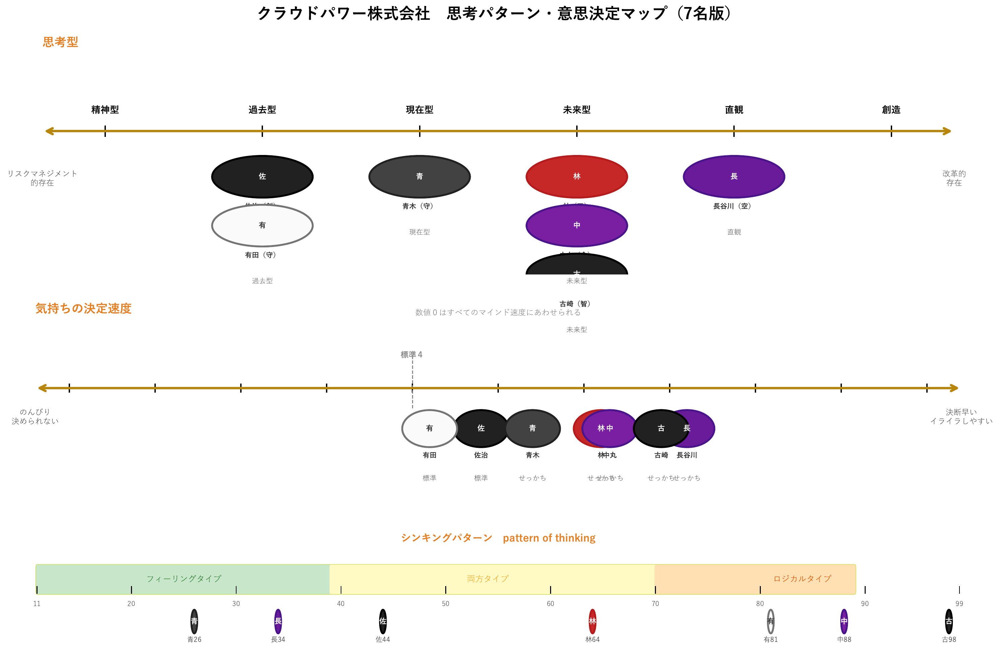
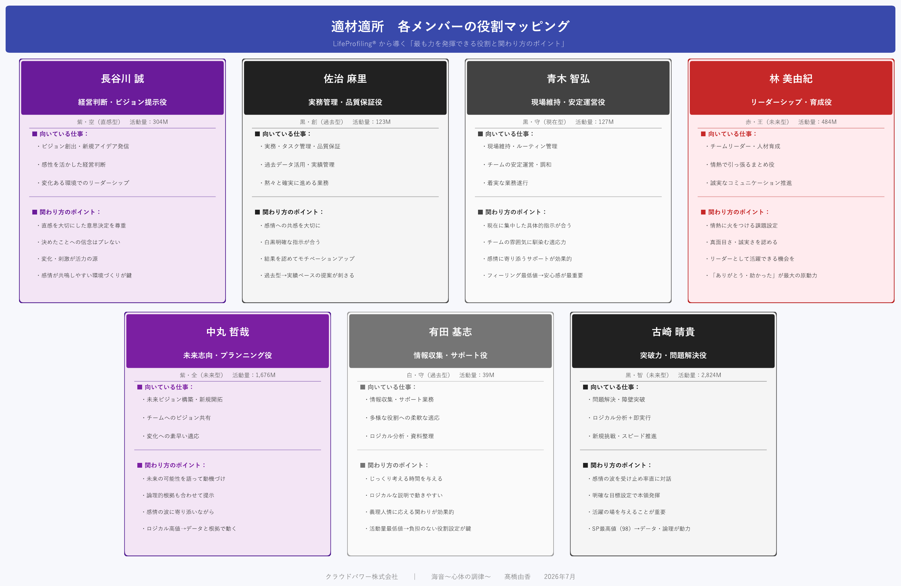

企業のオンライン保健室
実施報告書（最終回）
クラウドパワー株式会社 様
対象期間：2026年7月1日 〜 8月31日
| 会社名 | クラウドパワー株式会社 様 | 報告年月日 | 2026年9月7日 |
|---|---|---|---|
| 対象月 | 2026年7月1日〜8月31日 | 報告者 | 髙橋 由香 |
| 月テーマ | 保健室活動の締めくくりとお引き継ぎ | ||
クラウドパワー様のオンライン保健室を、約1年間にわたって担当させていただきました。この期間で、全社員面談を通じて保健室の位置づけを社内で共有でき、佐治さんが社員と保健室をつなぐ窓口として機能する体制ができました。直近の7・8月は、佐治さんとの月末の定期打ち合わせ、林さんの初回セッション、そして古崎さんの健康面のフォローを中心に活動いたしました。現時点で、緊急の対応を要する健康状態の社員は確認されておりません（古崎さんについては後述のとおり受診をお勧めし、結果を待っている段階です）。
約1年間を通じて、社員の皆さんが安心して意見を伝えられる環境づくりが進みました。佐治さんが社内の相談窓口として機能し、必要な方を保健室につなぐ流れができたことは、契約終了後も活かしていただける仕組みだと考えています。
健康診断の管理につきましては、今年度中に佐治さんへの引き継ぎが完了し、佐治さんにご対応いただきました。契約終了後も、この体制で運用いただけます。
保健室だよりに関しては、お渡ししたまとめは下記になります。
保健室だより 総集編
今後健康への関心を高めていただく一助としてご活用いただければ幸いです。
古崎さんについては、社内でのご様子や問診票の回答をふまえ、身体面の確認のため脳神経外科（神経内科併設）の受診を本人へお勧めしております。あわせて、めまい・手足のしびれ・ろれつが回らない等の症状が見られた場合は、速やかに医療機関を受診（必要に応じて救急要請）いただくようお伝えしております。受診の状況を確認しながら、経過を見守っていただけますと幸いです。
約1年間、貴重な機会をいただきありがとうございました。
以上
ライフプロファイリングをもとに、7名の関係性・思考の傾向・適した役割を可視化したものです。日々のコミュニケーションや役割分担の参考にご活用ください。



ライフプロファイリングから見た7名の特性と、最も力を発揮できる役割の一覧です。日々の関わり方・役割分担の参考にご活用ください。
| No. | 氏名 | 力を発揮できる役割 | パワー カラー | 深層 心理 | ナイン パーソナル | 思考タイプ |
|---|---|---|---|---|---|---|
| 01 | 長谷川 誠さん | 経営判断・ビジョン提示役 | 紫 | 宙 | 空 | 34（フィーリング寄り） |
| 02 | 佐治 麻里さん | 実務管理・品質保証役 | 黒 | 純 | 創 | 44（両方） |
| 03 | 青木 智弘さん | 現場維持・安定運営役 | 黒 | 海 | 守 | 26（フィーリング） |
| 04 | 林 美由紀さん | リーダーシップ・育成役 | 赤 | 陽 | 王 | 64（両方） |
| 05 | 中丸 哲哉さん | 未来志向・プランニング役 | 紫 | 純 | 全 | 88（ロジカル） |
| 06 | 有田 基志さん | 情報収集・サポート役 | 白 | 旅 | 守 | 81（ロジカル） |
| 07 | 古崎 晴貴さん | 突破力・問題解決役 | 黒 | 炎 | 智 | 98（ロジカル） |
※ 本表は概要です。各人の詳しいプロファイルは別添「個人のプロファイリング」（個人別ファイル）をご参照ください。 個人情報（生年月日・出生地等）を含むため、閲覧・保管の範囲を限定してお取り扱いください。
| 開催日 | 2026年6月26日 |
|---|---|
| テーマ | オンライン保健室の活用状況確認・今後の方針 |
ライフプロファイリングは、生年月日・出生地などから、その方が本来持っている個性・深層心理・思考パターン・行動力の傾向を読み解くものです。ご本人の強みの活かし方や、周囲との関わり方のヒントとしてご活用ください。
取扱注意：本資料には生年月日・出生地等の個人情報が含まれます。閲覧・保管の範囲を限定してお取り扱いください。